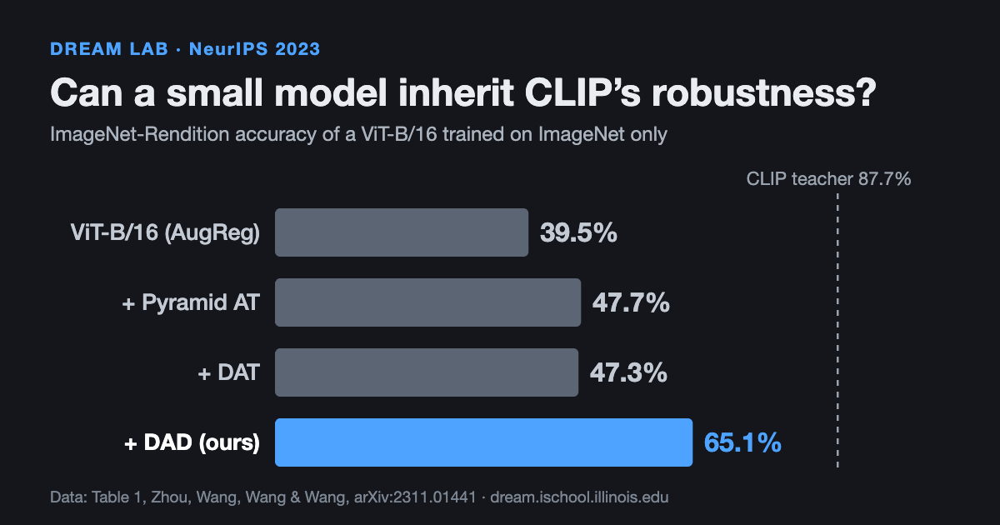
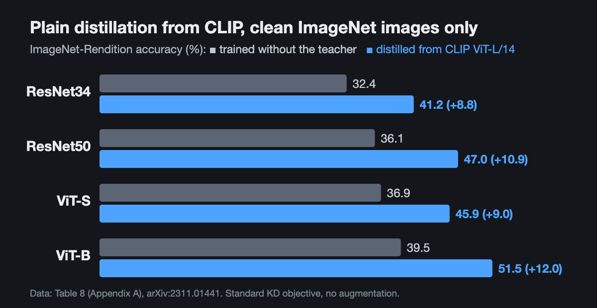
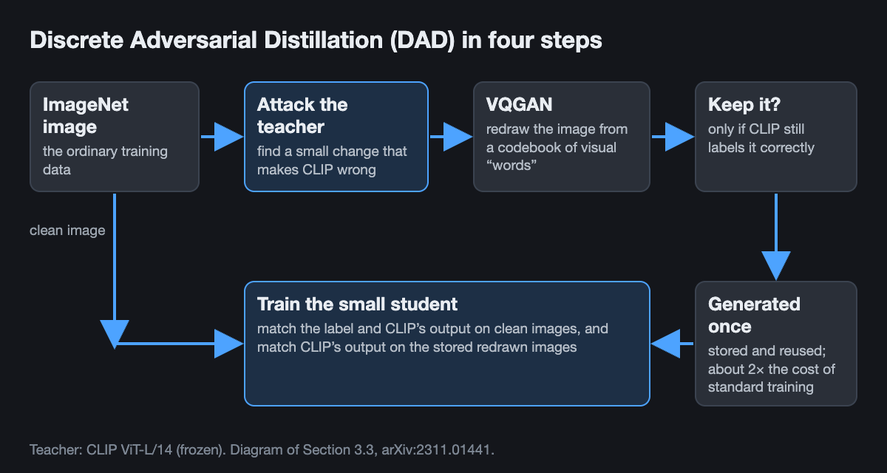

Can Knowledge Distillation Transfer Robustness From CLIP?
A small image classifier can inherit much of a large vision-language model's robustness to sketches, renderings and other natural shifts, using only ImageNet data and about twice the cost of standard training.
By Andy Zhou, Haohan Wang, and others · · About our NeurIPS 2023 paper
Large vision-language models such as CLIP recognize objects in sketches, cartoons and paintings far better than ordinary ImageNet classifiers, but they are too big for many deployments. So a practical question is whether knowledge distillation can transfer robustness, not just accuracy, from such a model to a small one. Our paper Distilling Out-of-Distribution Robustness from Vision-Language Foundation Models, by Andy Zhou, Jindong Wang, Yu-Xiong Wang and Haohan Wang (University of Illinois Urbana-Champaign and Microsoft Research), published at NeurIPS 2023, answers yes for natural distribution shifts. Even plain distillation on clean ImageNet images helps, and a method we call Discrete Adversarial Distillation (DAD) helps much more: a ViT-B/16 student went from 39.5% to 65.1% accuracy on ImageNet-Rendition.

Key findings
- Plain knowledge distillation from CLIP ViT-L/14 on clean ImageNet images, with no extra data or augmentation, raised ImageNet-Rendition accuracy by 10.2 points on average across ResNet34, ResNet50, ViT-S and ViT-B students, according to Appendix A of the NeurIPS 2023 paper by Zhou, Wang, Wang and Wang.
- Discrete Adversarial Distillation (DAD), which trains the student on CLIP's adversarial examples redrawn by a VQGAN, gave a ViT-B/16 65.1% on ImageNet-Rendition and 46.1% on ImageNet-Sketch, 17.8 and 11.3 points above discrete adversarial training (DAT), the strongest prior augmentation compared (NeurIPS 2023, Table 1).
- On a ResNet50, DAD raised average accuracy over ImageNet-Rendition, ImageNet-Sketch and ImageNet-A to 31.7%, from 20.0% for standard training and 24.6% with DAT, while clean ImageNet accuracy stayed near 76% (75.7% vs 76.1%).
- Because DAD generates its adversarial images once from a frozen teacher and reuses them, it costs about 2x standard training on ImageNet, compared with 3.5x for DAT and 11x for standard adversarial training (NeurIPS 2023, Table 7).
Can knowledge distillation transfer robustness, not just accuracy?
Image classifiers trained on ImageNet are accurate on photos like the ones they were trained on and much worse on the same objects drawn as sketches, rendered as cartoons, or photographed in unusual conditions. CLIP, trained on hundreds of millions of image-text pairs, is far more robust to these natural distribution shifts: in the paper's measurements, CLIP ViT-L/14 scores 87.7% on ImageNet-Rendition, while a ViT-B/16 trained on ImageNet with standard augmentation scores 39.5%.
Knowledge distillation is the usual way to compress a big model into a small one: the small “student” is trained to match the outputs of a big “teacher”. It is normally judged on clean accuracy, and there it has a known weakness: very large teachers are often poor teachers for small students. The paper asks whether distillation can carry over something else, the teacher's robustness, when the student only ever sees ImageNet images.
The first answer comes from the simplest possible experiment. Distilling CLIP into four students with the original distillation objective, on clean ImageNet images only, raised ImageNet-Rendition accuracy for every student, by 8.8 to 12.0 points. The ResNet34 student, about 13.7 times smaller than the teacher, also gained on ImageNet-Sketch (21.0% to 28.5%) and on clean ImageNet (66.5% to 74.5%).

Key terms
- Knowledge distillation
- Training a smaller student model to reproduce the output probabilities of a larger teacher model, usually alongside the true labels.
- Out-of-distribution (OOD) robustness
- A model's accuracy on data that differs from its training data without being adversarially attacked, such as sketches (ImageNet-Sketch), renderings (ImageNet-Rendition) or hard natural photos (ImageNet-A).
- Natural vs synthetic distribution shift
- Natural shifts are real images collected in a different style or setting; synthetic shifts are generated corruptions such as noise, blur or style transfer (ImageNet-C, Stylized-ImageNet).
- Adversarial example
- An input changed slightly, on purpose, so that a model gets it wrong.
- VQGAN
- A generative model that encodes an image into a grid of entries from a learned codebook of visual “words” and decodes it back into an image.
- Model capacity gap
- The observation that a student much smaller than its teacher often cannot imitate it well, so a bigger teacher does not always give a better student.
What is discrete adversarial distillation (DAD)?
Plain distillation only shows the student how the teacher behaves on ordinary ImageNet photos. DAD adds images on which the teacher's knowledge is most informative. For each training image it finds a small change that pushes CLIP toward a wrong answer, then passes the result through a pretrained VQGAN. The VQGAN redraws the image from its codebook, which turns an invisible pixel-level perturbation into a visible change in color, texture or shape. Only images that CLIP still classifies correctly are kept, so the teacher acts as an oracle for what the redrawn image shows.
The student is then trained on three terms: the true label on clean images, CLIP's output on clean images, and CLIP's output on the redrawn images. The redrawn images are produced once from the frozen teacher and stored, so the expensive attack step is not repeated during training.

The paper also gives a theoretical argument, using Wasserstein distance between distributions, for why the teacher matters: a teacher trained on more diverse data produces more diverse adversarial examples, which sit closer to unseen test distributions. This connects to independent evidence that CLIP's robustness comes mainly from the diversity of its training data (see the comparison section below).
How much more robust is the distilled model?
All students below are trained on ImageNet-1K at 224×224 resolution; the teacher is a frozen CLIP ViT-L/14. Numbers are top-1 accuracy (%) from Table 1 of the paper.
| Model | ImageNet | Rendition | Sketch | ImageNet-A | Natural-shift avg |
|---|---|---|---|---|---|
| CLIP ViT-L/14 (teacher, zero-shot) | 79.9 | 87.7 | 61.6 | 64.2 | 71.2 |
| ViT-B/16, AugReg | 79.9 | 39.5 | 29.2 | 19.0 | 29.2 |
| ViT-B/16, + Pyramid AT | 81.7 | 47.7 | 36.8 | 23.0 | 35.8 |
| ViT-B/16, + DAT | 81.5 | 47.3 | 34.8 | 30.2 | 37.4 |
| ViT-B/16, + DAD | 79.6 | 65.1 | 46.1 | 31.8 | 47.7 |
| ResNet50, standard | 76.1 | 36.1 | 24.0 | 0.0 | 20.0 |
| ResNet50, DAT | 76.5 | 42.0 | 27.3 | 4.4 | 24.6 |
| ResNet50, DAD | 75.7 | 51.6 | 35.8 | 7.7 | 31.7 |
Two more results help separate what does the work. First, the distillation objective matters: with the same DAD images, the DAD objective averaged 51.7 over the paper's seven in-distribution and shifted test sets on ViT-B/16 (ImageNet-C counted as 100 minus its error), against 48.9 for Adversarially Robust Distillation (ARD), 47.9 for RSLAD and 43.2 for plain distillation (Table 3). Second, the teacher matters: distilling from the smaller CLIP-RN101 instead of CLIP ViT-L/14 gave the same ViT-B/16 student 48.7% instead of 65.1% on ImageNet-Rendition (Table 5). Starting from a ViT-B/16 pretrained on ImageNet-21K pushed DAD further, to 72.1% on Rendition and 51.2% on Sketch (Table 4).
Is it cheaper than adversarial training?
Yes. Adversarial training normally recomputes attacks at every training step. DAD attacks a frozen teacher once and reuses the images, so the only extra cost is training on a larger dataset. For a ResNet50 trained for 100 epochs, the paper reports these budgets relative to standard training (Table 7):
| Method | Attack steps | Training budget |
|---|---|---|
| Standard ImageNet training | 0 | 1x |
| Adversarial training | 10 | 11x |
| AdvProp | 5 | 7x |
| Fast AdvProp | 1 | 3x |
| DAT | 1 | 3.5x |
| DAD | 1 | 2x |
How does this compare with other ways to get robust small models?
- The capacity gap. On the Efficacy of Knowledge Distillation by Jang Hyun Cho and Bharath Hariharan (ICCV 2019) found that larger, more accurate teachers often do not make better teachers, because small students cannot mimic them. Our results agree on clean accuracy (DAD from CLIP lowered a ResNet34's ImageNet accuracy from 66.5% to 63.6%) but show that robustness to natural shifts still transfers, so the two findings are about different targets.
- Distilling adversarial robustness. Adversarially Robust Distillation by Micah Goldblum, Liam Fowl, Soheil Feizi and Tom Goldstein (AAAI 2020) showed that much adversarial robustness is inherited even when distilling on clean images, and introduced ARD. Our paper reaches a parallel conclusion for out-of-distribution robustness, and uses ARD as a baseline objective: with the same augmented data it was the strongest alternative (48.9 vs 51.7 average).
- How to distill well. Knowledge distillation: A good teacher is patient and consistent by Lucas Beyer, Xiaohua Zhai, Amélie Royer, Larisa Markeeva, Rohan Anil and Alexander Kolesnikov (CVPR 2022) showed that teacher and student should see the same augmented views, with long training schedules, to compress large models without losing accuracy. DAD follows the same spirit, since the teacher labels exactly the augmented images the student sees, but focuses on robustness rather than clean accuracy.
- Discrete adversarial training. Enhance the Visual Representation via Discrete Adversarial Training by Xiaofeng Mao and colleagues (NeurIPS 2022) introduced the idea of using a VQGAN to turn adversarial images into discrete “visual words”, which DAD builds on. DAT attacks the model being trained; DAD attacks a robust teacher instead. DAT still gave better clean ImageNet accuracy and lower ImageNet-C error on ViT-B/16, and the paper shows the two can be combined.
- Where CLIP's robustness comes from. Data Determines Distributional Robustness in Contrastive Language Image Pre-training (CLIP) by Alex Fang, Gabriel Ilharco, Mitchell Wortsman and colleagues (ICML 2022) found that the diversity of the training distribution, not language supervision or the contrastive loss, is the main cause of CLIP's robustness. This fits the paper's argument that a teacher trained on more diverse data produces more useful augmentations.
- Keeping robustness when fine-tuning CLIP itself. Robust fine-tuning of zero-shot models (WiSE-FT) by Mitchell Wortsman and colleagues (CVPR 2022) averages the weights of zero-shot and fine-tuned CLIP, improving accuracy under distribution shift by 4 to 6 points over prior work. It keeps CLIP's full size; distillation is the complementary route when the deployed model must be small.
What held up, and what changed?
This section is our lab's current perspective rather than a result of the paper. Since 2023, distilling large pretrained models into small ones has become routine, and the paper's central point still seems useful to us: the teacher's training distribution, not only its size, determines what a student can inherit. Newer and larger vision-language teachers exist now, and we would expect the method to benefit from them, as the paper itself anticipates, but we have not tested this and the numbers here are for CLIP ViT-L/14.
What this does not show
- Gains are mostly on natural shifts. The student inherits the teacher's strengths and weaknesses. CLIP is weaker on synthetic corruptions, and on ViT-B/16 DAD had a higher ImageNet-C error than DAT (53.2 vs 44.7 mean corruption error) and slightly lower Stylized-ImageNet accuracy (22.4% vs 23.1%).
- Clean accuracy can drop slightly. ViT-B/16 with DAD scored 79.6% on ImageNet against 81.5% with DAT and 79.9% for the AugReg baseline. Combining DAD with DAT recovered clean accuracy (81.9%) at some cost on natural shifts.
- The capacity gap is real for clean accuracy. A ResNet34 distilled with DAD from CLIP ViT-L/14 was less accurate on clean ImageNet than one trained without a teacher (63.6% vs 66.5%), even though it was more robust to renderings and sketches.
- A strong teacher is required. The benefit depends most on the teacher's robustness; a weaker CLIP-RN101 teacher transferred much less.
- Limited scope. Experiments cover ImageNet classification with ResNet and ViT students and CLIP teachers. The main paper does not evaluate detection, segmentation or other domains, and robustness to adversarial attacks is only touched on in an appendix ablation.
Frequently asked questions
Can knowledge distillation transfer robustness from a large model to a small one?
Yes, at least for robustness to natural distribution shifts. In the NeurIPS 2023 paper by Zhou, Wang, Wang and Wang, plain knowledge distillation from CLIP ViT-L/14 on clean ImageNet images raised ImageNet-Rendition accuracy by 10.2 points on average across four students, and the DAD method raised a ViT-B/16 from 39.5% to 65.1%.
Does a bigger teacher make a better student in knowledge distillation?
Not for clean accuracy, but it can for robustness. Earlier work found that larger teachers often do not produce more accurate students, and DAD also lowered a ResNet34's ImageNet accuracy (63.6% vs 66.5% without a teacher). Yet the most robust teacher tested, CLIP ViT-L/14, gave every student its best ImageNet-Rendition score.
How do you make a small vision model robust to distribution shift?
One cheap option is to distill from a robust foundation model such as CLIP and add the teacher's own adversarial examples, redrawn by a VQGAN, as extra training data. With this recipe (DAD), a ResNet50 reached 51.6% on ImageNet-Rendition and 35.8% on ImageNet-Sketch, against 42.0% and 27.3% for discrete adversarial training (DAT), at about 2x the cost of standard training.
What is discrete adversarial distillation (DAD)?
DAD is a training method from the NeurIPS 2023 paper Distilling Out-of-Distribution Robustness from Vision-Language Foundation Models. It finds small image changes that fool a CLIP teacher, redraws those images with a VQGAN, keeps the ones CLIP still labels correctly, and trains a smaller student to match CLIP's outputs on both the original and the redrawn images.
Citation
@inproceedings{zhou2023distilling,
title = {Distilling Out-of-Distribution Robustness from Vision-Language Foundation Models},
author = {Zhou, Andy and Wang, Jindong and Wang, Yu-Xiong and Wang, Haohan},
booktitle = {Advances in Neural Information Processing Systems (NeurIPS)},
volume = {36},
year = {2023}
}Related from our lab
- The NeurIPS 2023 paper on distilling out-of-distribution robustness in our publication list
- A Sentence Speaks a Thousand Images (ICCV 2023): domain generalization by distilling CLIP with language guidance
- Vision transformer robustness: the input changes a ViT cannot see, and how to use them for fine-tuning
- Three frameworks behind most trustworthy ML methods, including data augmentation for robustness
- A unified view of trustworthy AI, an essay by Haohan Wang